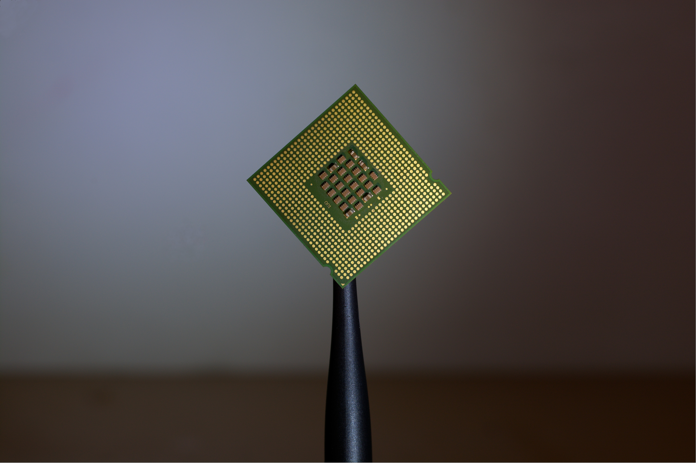

O projeto foi concebido pela FIAP e consiste no desenvolvimento e documentação de um robô para competir com outros robôs, a fim de integrar conhecimentos e técnicas de todas as disciplinas dos alunos do primeiro ano do curso de Sistemas de Informação
Nosso robô, O Taldo Destroça, é
muito mais que um robô feito para briga!
Ao vê-lo nas arenas
poderemos ver que por trás
do resultado final há meses de estudo em elétrica
básica e
digital tal como em programação aplicada
Tudo isso inserido dentro da tendência mundial de robótica educacional!
Galeria


Especificações
O robô é composto por três principais partes:
Estrutura e HArdware
Nosso Robo foi construido em uma base de
mdf de 25cmx25cm,
com paredes
triangulares medindo
10cm
x
23cm x
25cm. Ele é movido por dois motores de 5v/150rpm cada, com caixa de redução embutida.
O
"cerebro"
do
taldo
destroça é um arduino uno, acoplado a ele um shild de motores com capacidade de controlar
ate 4
motores.
O
robô é controlado por um smartphone via bluetooth, atráves
de um módulo bluetooth hc 06.
Para
alimentar todo este monstrinho necessita de 6 pilhas AA de
1.5v cada.

Arma
A arma é composta por:
Um
motor
dc 5v/330rpm o qual possui um palito com uma bola cheia de agulhas na ponta pronto para
estourar
os
balões
dos adversários!

Robocup:
A Robocup é a competição mais antiga da
FIAP. Alunos dos 1°s anos de Sistemas de Informação
constroem robôs para participar de duelos, onde o principal objetivo é
estourar o balão que o
adversário carrega. Para isso, todas as máquinas possuem armas em
seu corpo.
A competição
também exige o funcionamento pleno do
robô.
Após estourar o balão do oponente, ele deve recolher
sua arma, só assim é considerado o vencedor.
Next:
O NEXT é o Festival de Tecnologia e Inovação que reuniu, no ano de 2017, mais de dois mil jovens talentos da FIAP apresentando suas melhores criações: drones, robôs, conteúdos para VR devices, aplicativos mobiles e muito mais. O evento citado acima foi realizado em 21/10/2017 na Casa das Caldeiras.

Equipe Destroça
Nossa Equipe é formada por 5 membros,
construímos o robô e queremos que essa
iniciativa traga bons frutos e os compartilhemos com o mundo!


Outros Robôs idealizados por nós!
Robô EduTech
Nosso robô, o EduTech, foi criado com o objetivo de auxiliar o aprendizado da criança para que os dois o façam de forma autônoma e divertida integrando diversos conhecimentos para além da grade básica, ou seja, a criança poder programar de forma simples o robô para que o mesmo a ajude nas disciplinas escolares sem necessariamente estarem recebendo auxílio de um adulto.

Dados
A razão pela qual decedidos a criação do Robô, estão baseadas nos dados a seguir:
O gráfico nós mostra que, em um total de 14 responsavéis, 9 percebem a dificuldade de seus filhos(as) nos estudos.
Devido a pandemia que ocorreu nos ultimos anos, esse numero aumentou drasticamente.
Como visto no gráfico ao lado, no total de 11 pessoal consultadas somente 3 conseguem acompanhar os estudos do(s) seu(s) filho(as)

Qual a razão da robótica educacional?
O investimento nesse ramo é grande igualmente com a chance de mudar o futuro da educação!
Prós e Contras
Prós:
A robótica educacional promove aos estudantes de todas as idades o contato com a robótica e programação desde muito cedo
em suas vidas, instigando assim hard e soft skills essenciais para seus futuros.
O mercado de robótica pedagógica vem
em crescimento exponencial em locais como: Ásia, Israel e Eua por exemplo, e ainda se mostra uma área pouco explorada em
nosso país, por isso nós da Otaldo Destroça trazemos uma proposta para implementar essa forma educacional no Brasil.
Trabalhamos e testamos metódos educacionais e observamos que o <>melhor caminho/span para por em prática e medir os resultados
esperados é trabalhar em conjunto com os mestres: professores.
Contras:
O gasto com o reparo e construção do robô é grande, principalmente por estarmos no começo e termos poucos investidoes.
Há que levar em conta a etapa de preparaçãp, ou melhor dizendo, versão Beta do robô. Pois colocaremos o projeto em prática, em sua fase inicial nas escolas, onde poderemos contar com o apoio crítico de
professores com anos de experiência com crianças e educação, e assim testar a efetividade do robô juntamente com a
análise dos resultados e pontos a melhorar.